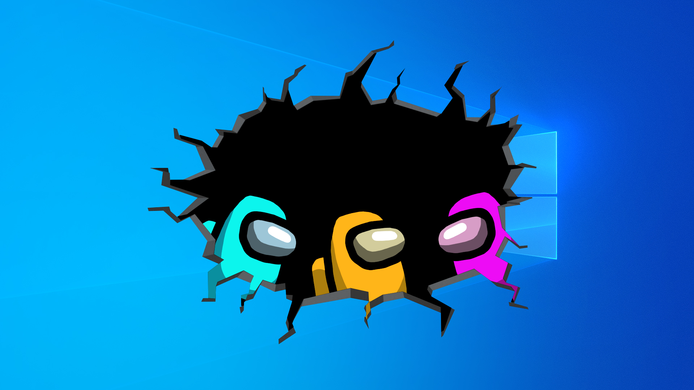
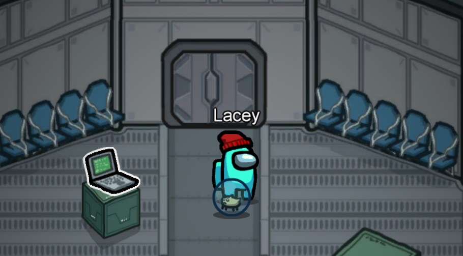

The Basics of the Game Everyone's Been Obssesed With
Among Us is an online multiplayer where up to ten players run around a spaceship map and attempt to complete tasks before being sabotaged, murdered, or booted out of the spaceship. So you have two roles upon entering a match. You're either a crewmate, whose duty is to complete tasks with other crewmates around the ship to win the game before the Imposter kills enough people. Or you're an Imposter with fake tasks running around trying to kill as many crewmates as possible to win the game. Up to three imposters can be selected to live amongst "crewmates" within a single game.
This free-to-play game became very popular and is now available on devices such as iOS, Android, PC, and now even the Nintendo Switch. I personally love this game because it's super fun to play with friends, which I do recommend getting a group of at least 7 people you can play with because players love to dip out if they're not Imposter. Here's just a few tips I could think of if you're new to the game and want to learn how to win by being an Imposter or a Crewmate. Don't forget, have fun! It's free to play or you can spend a few bucks to get some in-game accessories like a hamster that rolls around in a ball and is abandoned when you're murdered. I swear it's fun. :)
